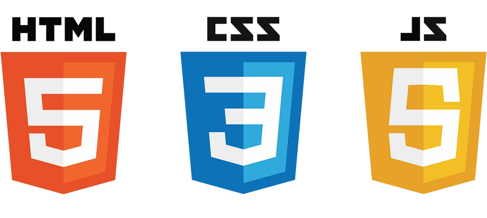
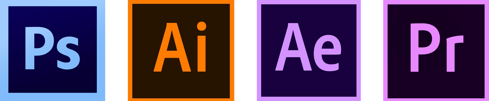

Competências
Estou apto a realizar, gerir e criar conteúdo para websites no paradigma Front End ou através de CMS's como Wordpress, tendo conhecimento de HTML, CSS e JavaScript/JQuery.
Domino todo o pacote Adobe: desde do motion graphics, á foto de produto, ou ao design de um logótipo, sou capaz de desempenhar qualquer uma destas tarefas.
Sou capaz de utilizar ferramentas da Google para medir resultados e fazer campanhas SEM. Sou também capaz de utilizar programas de automatização de newsletters como de optimização de SEO, estando apto também a redigir textos e a melhorar o posicionamento nos motores de busca de qualquer site.
Contatos
911 041 652pedrobrunofpinto@gmail.com